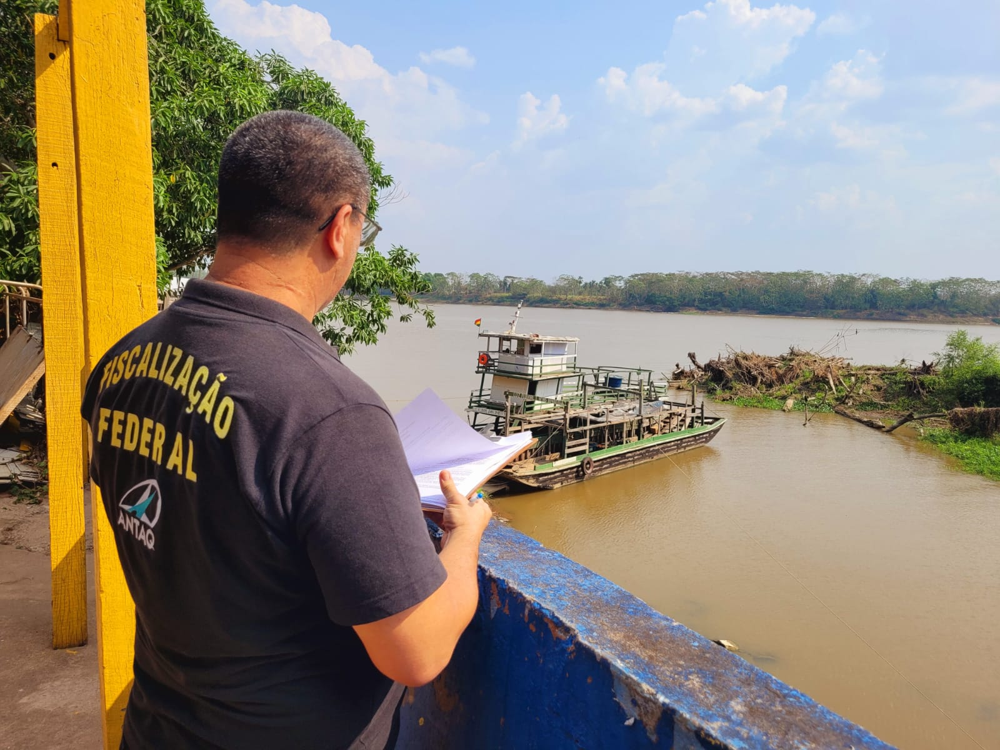
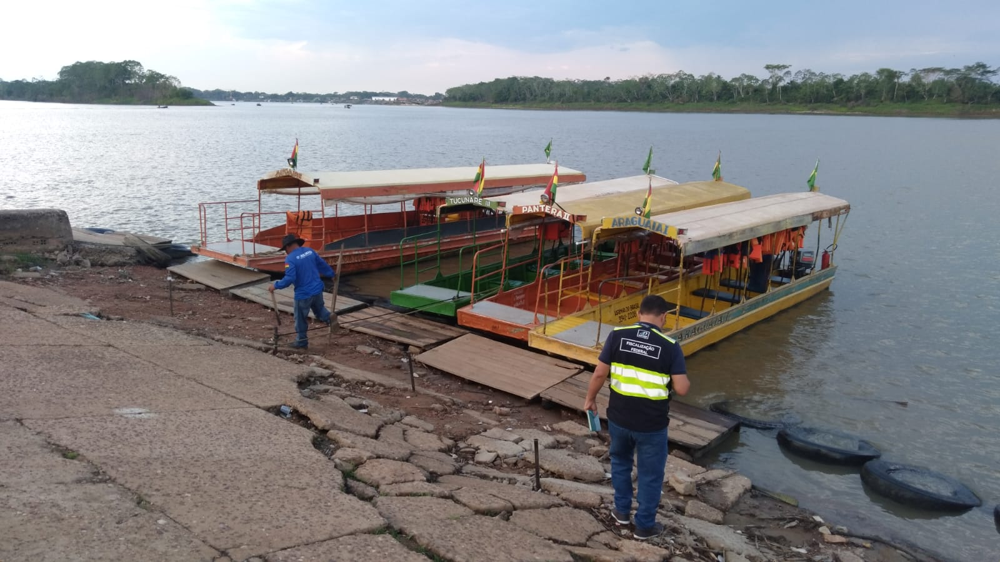
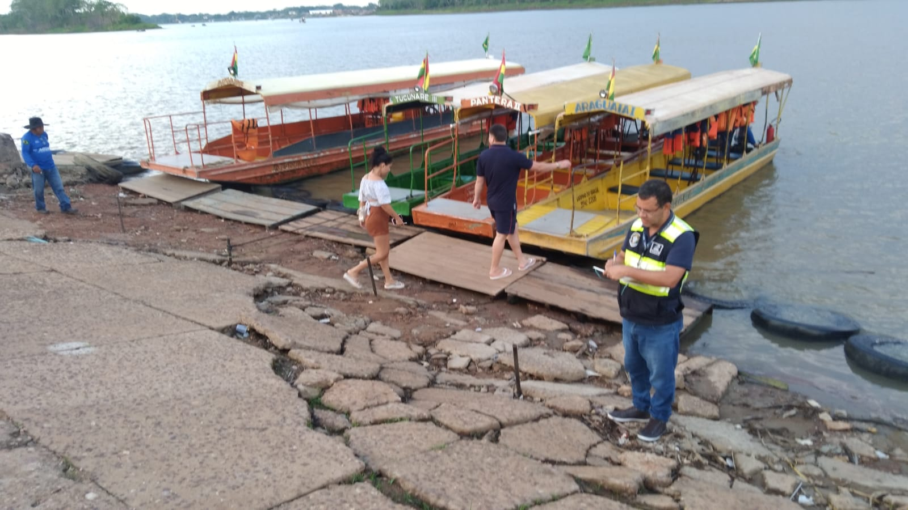
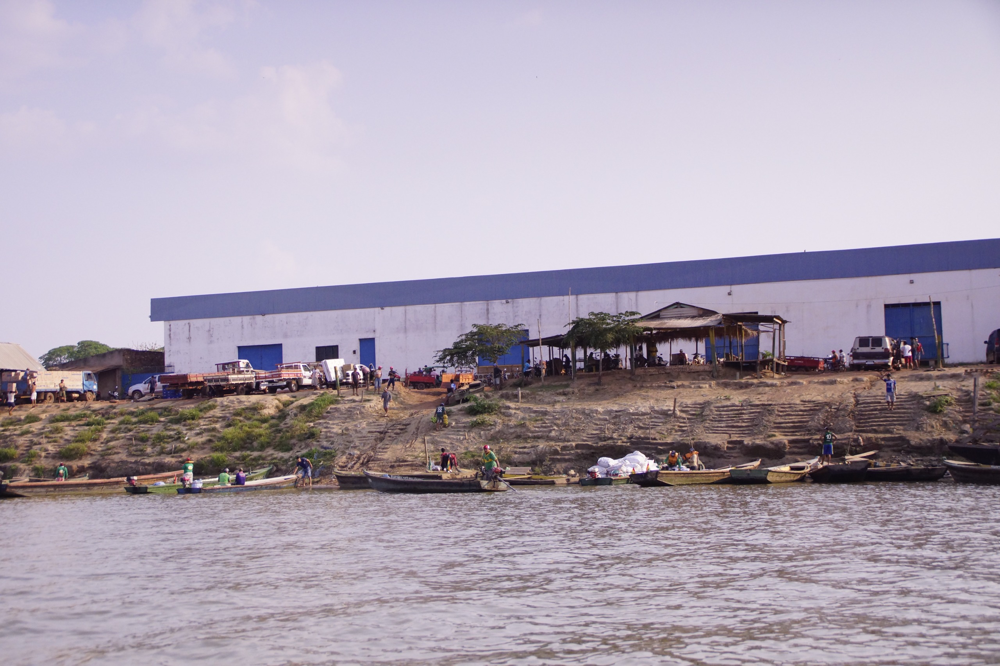
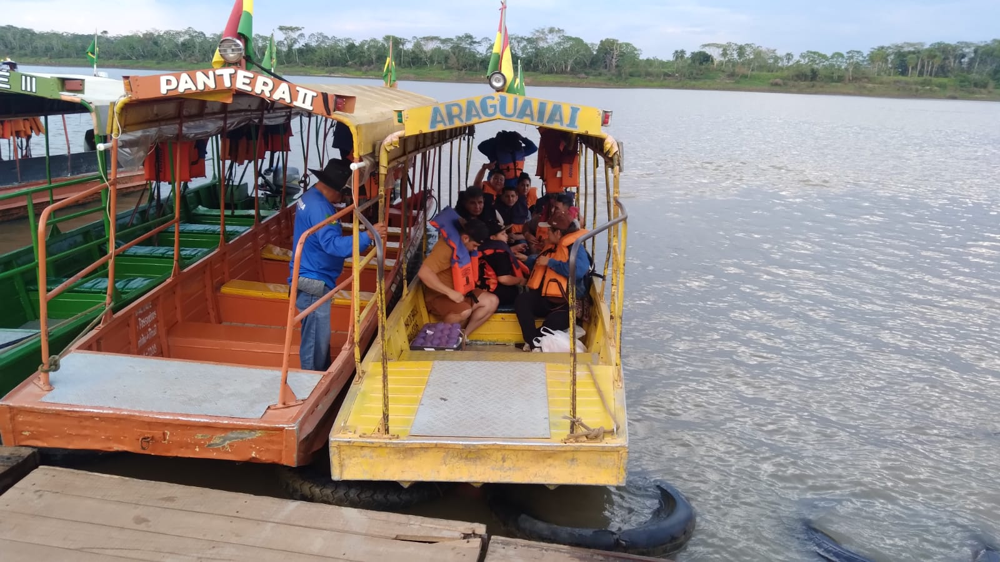
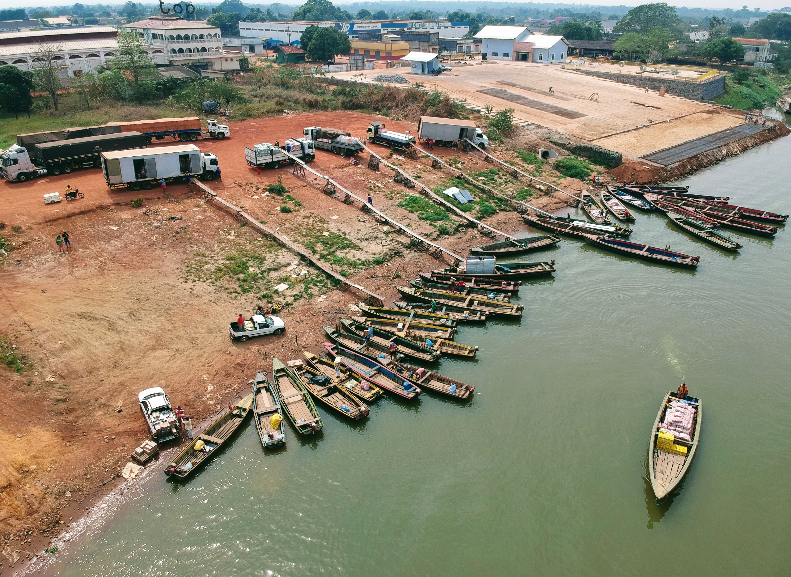
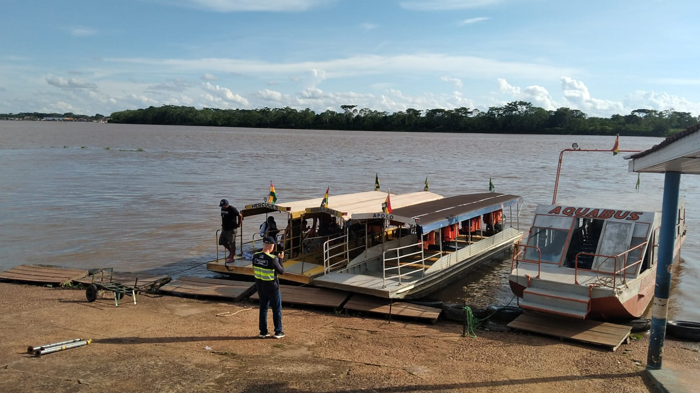
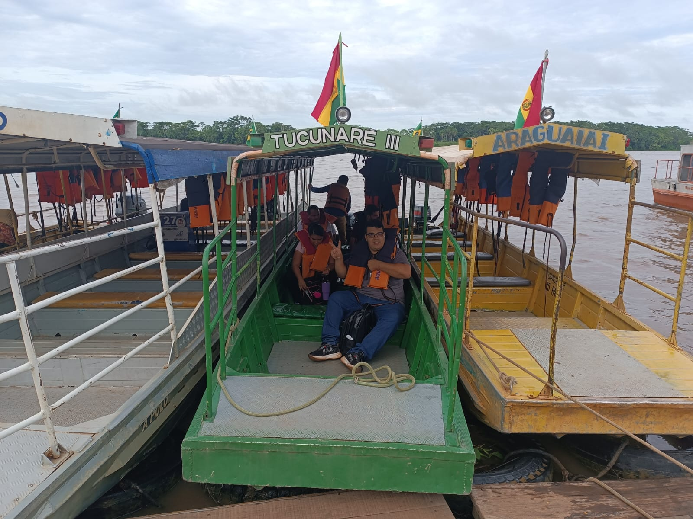

Desafio Estratégico
Navegação Interior
Fiscalização nas fronteiras mais remotas do Brasil — onde o transporte aquaviário é o único meio de acesso para milhares de cidadãos.
Oiapoque
Fronteira com a Guiana Francesa
Travessia fluvial internacional pelo Rio Oiapoque — única conexão entre Brasil e Guiana Francesa por via aquaviária.











Guajará-Mirim
Fronteira com a Bolívia
Travessia pelo Rio Mamoré conectando Brasil e Bolívia — rota essencial para comércio e deslocamento de comunidades ribeirinhas.
Tabatinga
Tríplice fronteira — Colômbia e Peru
Navegação no Rio Solimões na tríplice fronteira — ponto estratégico para passageiros e cargas na Amazônia Ocidental.
Workshop de Planejamento ANTAQ 2026 — SFC
13 / 14